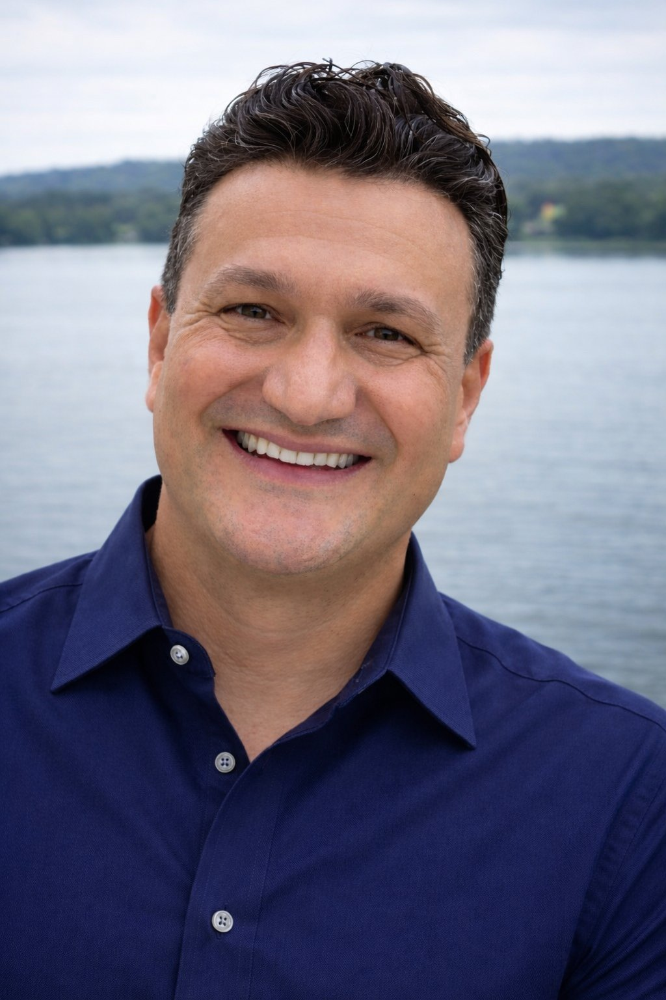
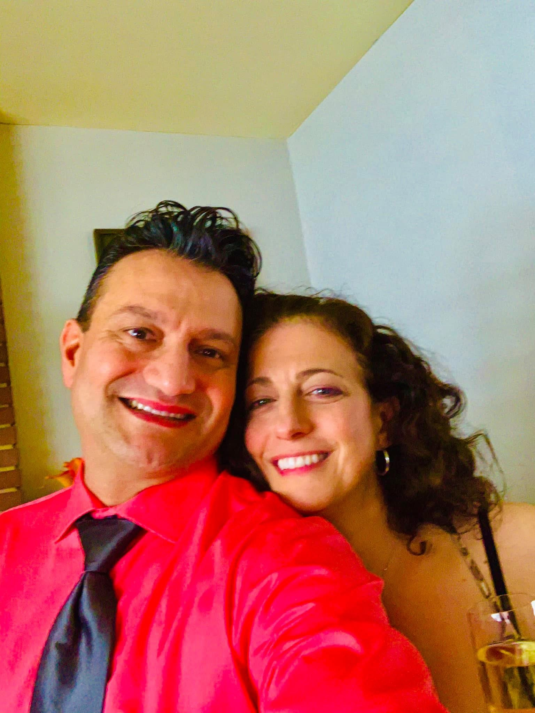
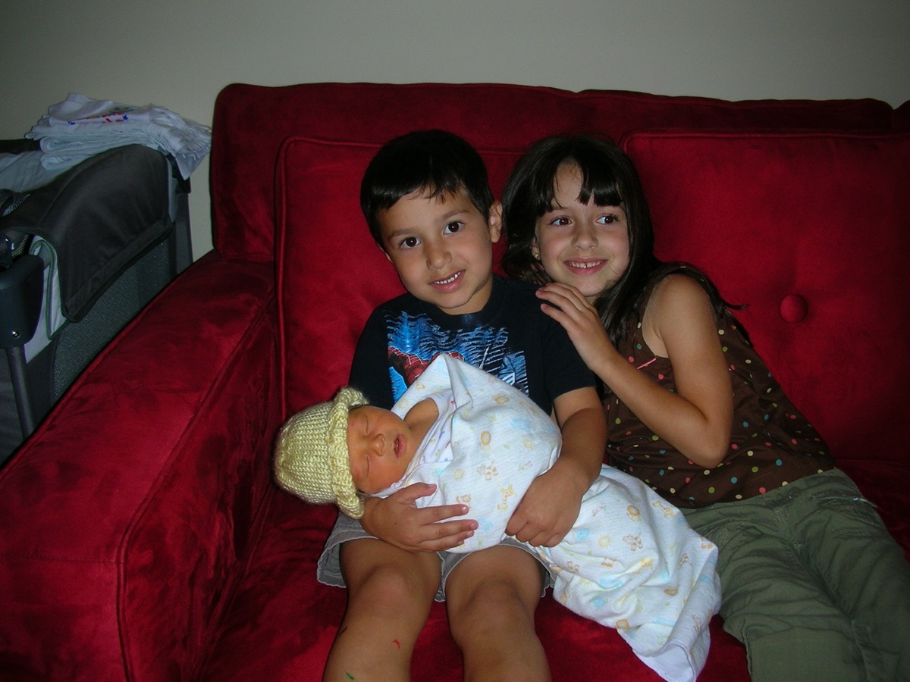
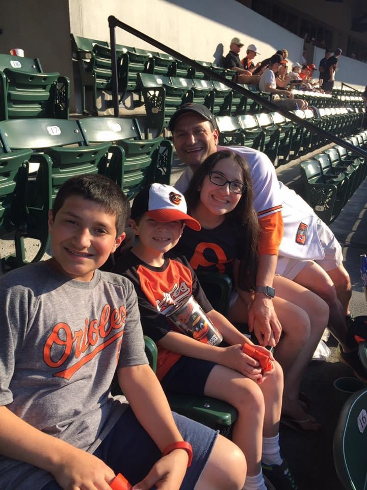
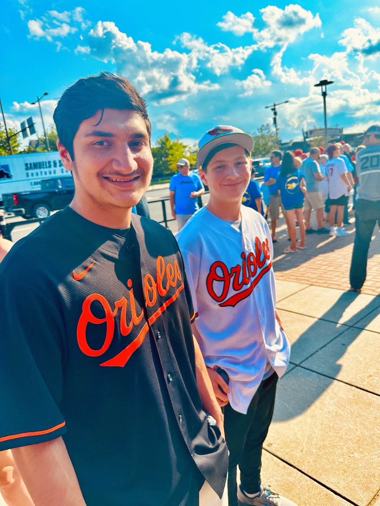
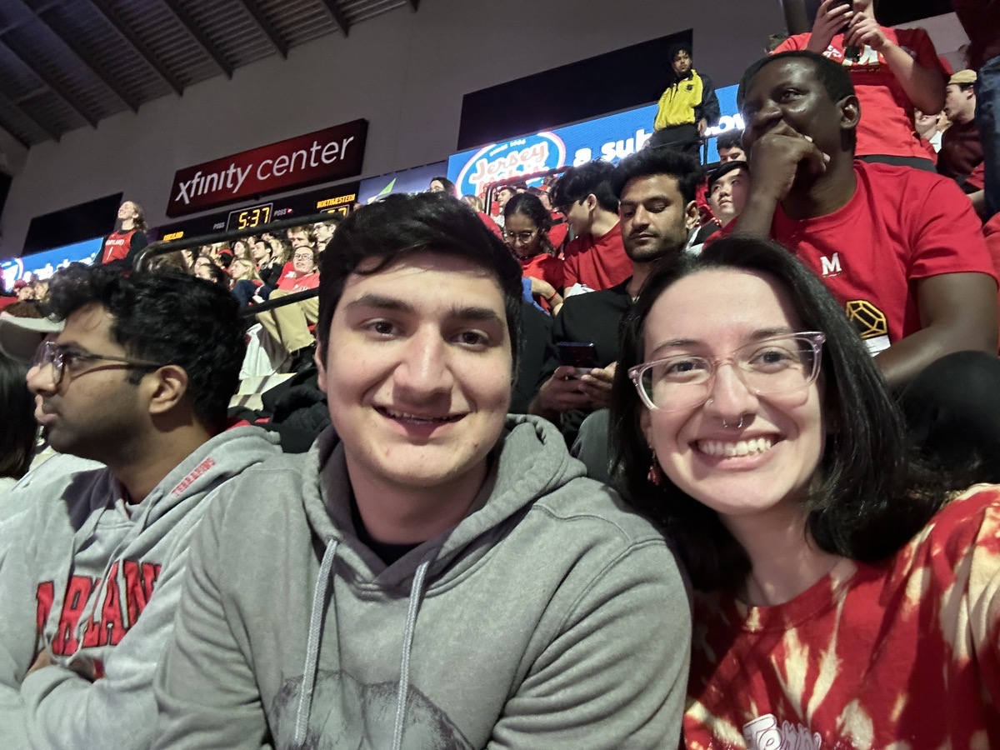
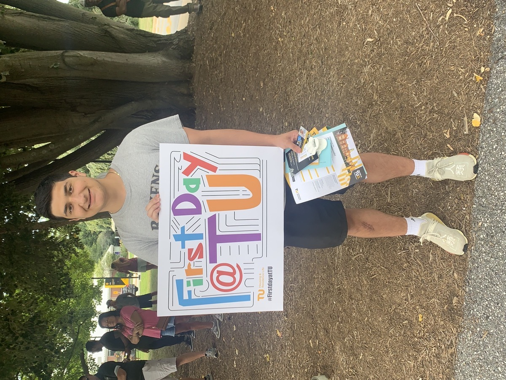
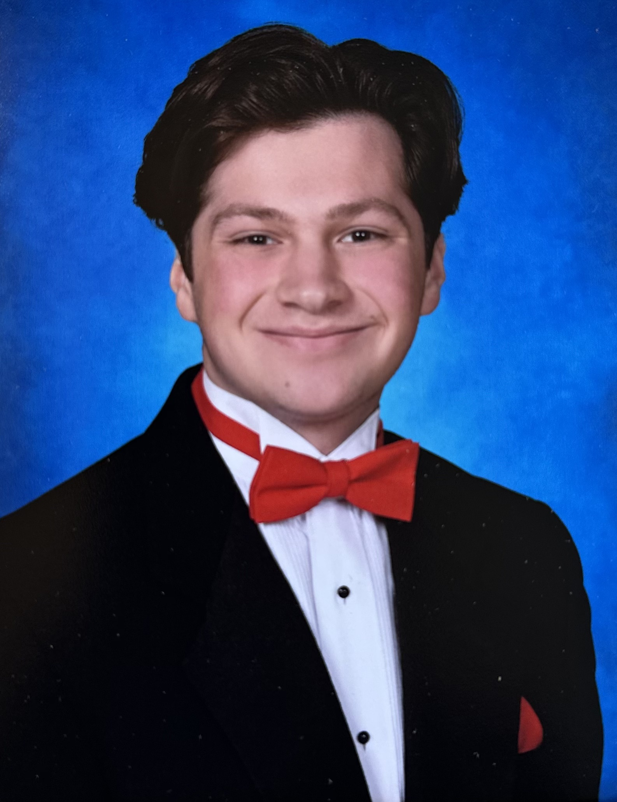

About me
Principal Storage, SAN & Systems Engineer — Baltimore, MD
In 1970, my father John left the island of Rhodes, Greece, and crossed an ocean with my mother and two young children — my brother Antonios and my sister Sevi — carrying nothing but skill, determination, and an extraordinary pair of hands. He became a master tailor in Baltimore, building suits from scratch — measuring twice, cutting once, never rushing what mattered. A few years later, I was born. And without realizing it until much later, I became my father’s son in the deepest sense: I just build in a different material.
I’m a Principal Storage, SAN, and Systems Engineer with over 25 years of experience designing and running enterprise infrastructure that simply cannot fail. For the past 25 years I’ve been at T. Rowe Price, one of the world’s most demanding financial firms — leading storage and platform engineering across a global footprint spanning Maryland, Colorado, the UK, Hong Kong, Sydney, and beyond. We’re talking 50+ petabytes of data, 13,000+ virtual machines, 24/7 production environments where downtime isn’t a bad day — it’s a crisis. I’ve built the systems, tested the recovery plans, run the escalations, and made sure the lights stay on.
What drives me isn’t the technology — it’s the puzzle. I’m laser-focused and detail-obsessed in the best possible way. Give me a complex incident, a failing system, an architecture problem that nobody can crack — and I’m in my element. The same instinct that has me pulling up YouTube at midnight to figure out a home renovation is the one that keeps me calm at 2am during a production incident. Whether it’s rebuilding a SAN fabric, automating a disaster recovery workflow in PowerShell, or figuring out why a single LUN is degrading performance across 200 hosts — I don’t stop until I understand it completely.
I’ve spent over two decades earning trust the hard way — by showing up, knowing the systems cold, and never cutting corners. My technical depth spans enterprise storage (Pure Storage, Dell EMC PowerMax/VMAX, NetApp), SAN architecture, VMware at scale, disaster recovery, and automation. I’m currently building toward AWS certification and expanding into cloud infrastructure — because the craft evolves, and so do I.

Christos & Rebecca
Together since 2020 — two infrastructure people who met at T. Rowe Price and built something better than any system either of them ever engineered. Rebecca was a Principal UNIX/Linux Manager before retiring to focus on family and herself. Best decision either of them ever made.

Day one — Zoey, Johnny & newborn Tony
The moment the three of them became three. Johnny holding Tony for the first time, Zoey right beside him. This is where it all started.

Camden Yards, Baltimore
Born and raised Orioles fans. All four of them in orange and black — some traditions are non-negotiable.

Johnny & Tony — brothers
Two brothers in Orioles jerseys outside the ballpark. Baltimore through and through.
Zoey
CS graduate, University of Maryland. AI specialist already making her mark in tech.

Johnny & Zoey — Xfinity Center
Siblings doing college together at Maryland. Go Terps.

Johnny — first day at Towson
Chemistry degree, then Notre Dame of Maryland for his PharmD. The kid who held his baby brother is going to be a pharmacist.

Tony
Calvert Hall graduate, heading to Boston University for computer science — fall 2026. The baby in that first photo, all grown up.
I volunteer with Meals on Wheels and St. Ursula School, and I’m a regular Red Cross blood and platelet donor — because giving back to the community that shaped you isn’t optional, it’s just what you do. I’m bilingual in Greek, which keeps me connected to the island my father left behind and the heritage my family carried across the Atlantic.
My father John built things to last. So do I. If you’re looking for someone who will take ownership of your most critical systems — let’s talk.
Get in touch →